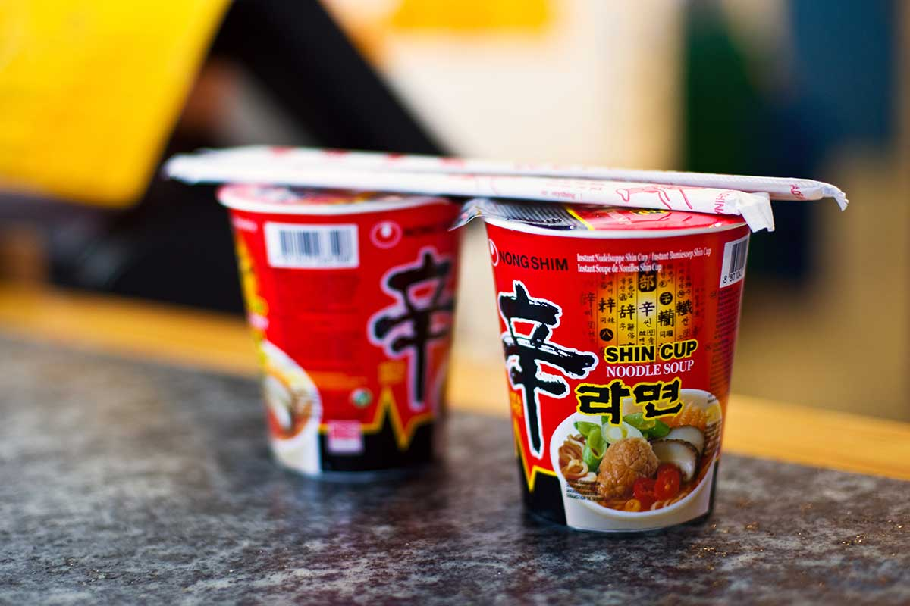

Instant Ramen

Back to Recipes Page
Description
Quick and easy, and also unhealthy!
Ingredients
- Cup ramen
- hot water
- chopsticks
Steps
- Open the cup lid half way
- Pour hot water inside cup until it reaches the water line inside.
- Close lid and put chopsticks on top.
- Wait 2 minutes.